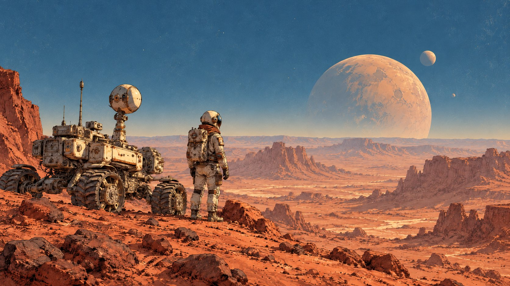

PhD Student · Computational Media · UC Santa Cruz
I began my PhD in Computational Media at UCSC, working with Dr. Magy Seif El-Nasr in the Game User Interaction and Intelligence Lab.
I delivered the oral presentation of our SpaceCHI paper at NASA Ames Research Center, sharing our work on human-centered AI for crew-autonomous space missions.
I presented our FDG ’26 paper, “Talking Wildfire: How Discourse in Serious Games Shapes Collaborative Learning and Preparedness,” at the conference in Copenhagen, Denmark.
Our paper, “Designing for Mars: Human-Centered AI, Resilience, and the Future of Crew-Autonomous Space Mission Planning,” was accepted to SpaceCHI and selected for an oral presentation. SpaceCHI is the world’s first conference focused on advancing HCI for space exploration. (SpaceCHI)
Our paper, “Exploring Indian International Students’ Experiences with LLMs,” was accepted to the International Conference on Human-Computer Interaction (HCII ’26).
“The Sphinxes” was featured in Forbes. I contributed to the project as an immersive artist and HCI researcher. (Forbes)
Our position paper, “Relationship-Centered Care: Relatedness and Responsible Design for Human Connections in Mental-Health Care,” was accepted to the Toward Relationship-Centered Care with AI workshop.
Serious Games · Space Exploration · Well‑being · Community Research · Human-AI Experience
In this project, we developed a discourse-centered, triangulated methodology to understand how player-to-player communication in serious games fosters collaborative learning, shared understanding, and collective action for real-world wildfire challenges.
Read More →

In this project, we explored how artificial intelligence can support astronaut planning, scheduling, and execution during long-duration space missions where communication delays reduce real-time support from Earth.
Read More →
In these projects, my research group and I are investigating how AI systems designed to provide emotional and psychological support shape human relationships and the fundamental need for relatedness.
Read More →
Painting · Drawing · Sculpture · Photography · Digital